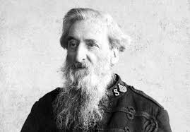

1878
Fondation
L'Armée du Salut voit le jour à Londres
En pleine révolution industrielle, le pasteur William Booth est choqué par les conditions de vie indignes du monde ouvrier, notamment dans l'Est de Londres. Il crée en 1865 ce qui deviendra en 1878 l'Armée du Salut pour répondre aux besoins matériels et spirituels des plus démunis.
Le pasteur, en quête d'efficacité, s'inspire du modèle militaire pour structurer une « armée » afin de répondre aux besoins élémentaires tant matériels que spirituels.
Soup, Soap, Salvation !

William Booth
Fondateur de l'Armée du Salut